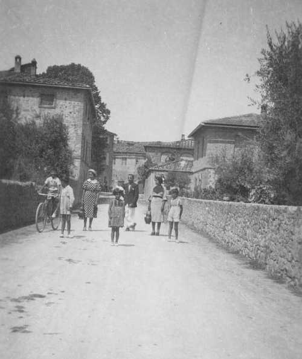

Quercegrossa (Ricordi e memorie)
CAPITOLO I - LUOGHI E PODERI
(QUERCEGROSSA DI SOPRA)
Cliccami per ritornare all'Indice poderi
Vai all'Indice dei Capitoli
Quercegrossa - Vai a
Quercegrossa - Introduzione storica
Quercegrossa - Vai a
Villa
Quercegrossa - Vai a
Palazzaccio
Quercegrossa - Vai a
Quercegrossa di Sotto Case Ticci
Quercegrossa - Vai a
Casagrande
Quercegrossa di Sopra
Quercegrossa - Vai a
Nuovi edifici
Quercegrossa "di sopra"
Il nomignolo “Quercia di Sopra” di origine ottocentesca che indicava il podere di Casagrande in Quercegrossa venne esteso nel Novecento alle nuove costruzioni realizzate dai Mori lungo la strada in direzione della chiesa negli anni Trenta: sono appunto queste delle quali parlo. Il primo edificio ad essere innalzato furono i locali per la nuova bottega o, come venne definita, "Privativa" oppure "Appalto", aperta nel 1931, con il muratore Dino Castagnini e il mi’ zio Guido Rossi tra i manovali. Essa sorgeva di fronte al Palazzaccio, dietro il vecchio forno, con davanti un piccolo giardino. Era una costruzione a due piani e ospitò la bottega della "sora Emilia" Bernardoni. L’edificio della Privativa venne destinato a Dina Mori dalla famiglia quale parte della sua eredità e lei ne fece la propria abitazione al primo piano; divenne proprietaria dei due piani e di un appezzamento di terra lungo la strada, adiacente alla costruzione. Alcuni anni dopo, nel 1935/36, ripresero i lavori che modificarono sostanzialmente tutto l’ambiente e vennero eseguiti dal muratore detto il "Cillo" di Castellina con il giovane Alfredo Salvini come manovale. Di fronte al lato Sud del podere detto Casagrande vi sorgevano, fin dal 1850, un forno, uno stanzino e una parata, costruiti dagli Andreucci.
Nella foto sottostante: Quercegrossa come si presentava nel 1938/39 dopo la costruzione della Privativa. Al centro della foto Pierina Rossi, Maria Rossi, col vestito a quadretti, e altra signora con la brocca in mano, in partenza per il Doccio a far rifornimento d'acqua.

Lo stanzino con ingresso sulla strada venne adibito verso il 1905/10 a ufficio postale che vi rimase fino al 1925, dopodiché tornò ad essere deposito di legna e carbone. Con l’inizio della seconda fase di lavori di trasformazione e ampliamento lo stanzino scomparve mentre rimase il forno e al posto delle parate sorse un grande fabbricato con paramento in cotto destinato ad ospitare la famiglia colonica del terzo podere e un inquilino. Infatti, il quartierino ricavato sopra il forno venne subito affittato e vi tornò la famiglia Guarducci, forse nel 1940, che vi rimase per 20 anni. Questo ambiente col forno sottostante presentava dei vantaggi d’inverno, ma la cucina, proprio al di sopra, diventava una fornace nella stagione estiva, quando accendevano per cuocere il pane. Si ebbe cosi un fronte di fabbrica che partendo dal forno adiacente alla strada principale comprendeva al piano terra una grande stanza adibita poi a stalla del cavallo dei Guarducci e gli ambienti del podere introdotti da un ingresso ad arco ossia la cantina a destra, e la stalla per i bovi a sinistra. In chiusura del complesso, i castri e la parata. Si saliva in casa del contadino da una diritta scala interna con un pianerottolo che dava a sinistra nella stanza del telaio, di fronte il gabinetto e a destra la cucina. Dalla cucina si accedeva a due camere: una a sinistra che dava sulla parata e guardava a Est, dove dormiva Dino Giannini, morto in guerra, l’altra a destra, una camera buia dove dormivano Benito e Iolanda. La storia del terzo podere è breve e finì con la mezzadria e con la famiglia Costanzi che aveva dato il cambio ai Giannini. Quando poi venne acquistato dai Lazzeri verso il 1960 fu affittato a un pigionale e successivamente servì da abitazione del proprietario Guido Lazzeri. Inoltre, il forno venne demolito e unito al sovrastante quartierino, ricavandone un’abitazione più ampia che venne inaugurata da Silvana Rugi. Dopo si ricordano avervi abitato Foffo e Ginetta, pigionali, e infine il proprietario Livio Lazzeri. L’altra costruzione con l’appalto rimase sempre a Dina Mori e a suo marito Dante Oretti, prima di passare alla figlia Lea che ancora ci vive.
L'edificio ereditato da Dina Mori, oggi proprietà Oretti - Socci. Al piano terra ospitò fino al 1955/56 la Privativa ossia la Rivendita di Sale e Tabacchi che fungeva anche da bar e sala giochi
Sopra, lo stabile costruito nel 1939/40 dai Mori, oggi proprietà Lazzeri i quali l’hanno ristrutturato eliminando sulla destra il vecchio forno e costruito la scala esterna. Nella parte sinistra vi era l’abitazione del contadino con sotto la stalla e al centro, seminascosta dai fiori, quella del cavallo del Guarducci che abitava al primo piano nella parte destra.
|